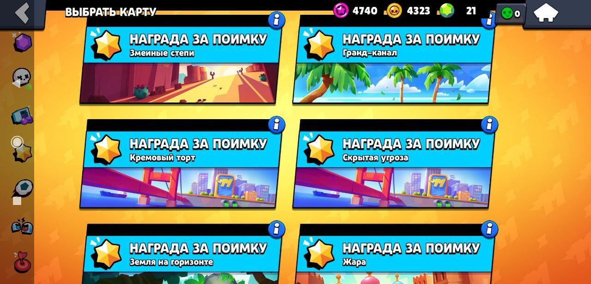

Наразі у грі є 11 режимів.[4] 3 з них доступні щодня (Захоплення кристалів[5], Зіткнення[6] (можна грати як наодинці, так і з напарником[7]) і Броулбол[8]). 3 з них доступні 24 години та змінюються один за одним (Пограбування[9], Нагорода за Схоплення[10] й Облога[11]). А ще 4 режими доступні щотижня (два дні на гру, та п'ять днів на очікування). Це Робо-Рубка[12], Велика гра[13] та Бій із босом[14] та Розгром Суперсіті[15]. Останній режим - Силова гра. Там щодня з'являються інші 7 режимів (Захоплення кристалів, Одинарне Зіткнення, Парне Зіткнення, Броулбол, Пограбування, Нагорода За Схоплення, Облога). Але кожні 4 тижні сезон закінчується, та починається новий. У кінці сезону зароблені очки переводяться у Зоряні очки. Динамічна гра, розрахована для мобільних платформ з боями 3 на 3 і битвою на виживання!
